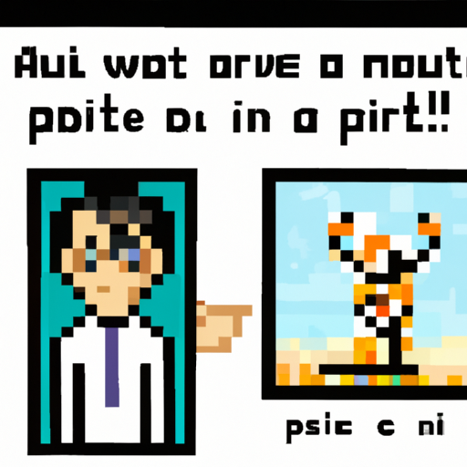

Why AI will never replace the artist
Today, technology has advanced so much that it is capable of creating art. From 3D printing to AI-generated images, the possibilities of what can be created with technology are endless. But even though AI can be used to create art, it will never replace the artist.
The main reason why AI will never replace the artist is because of creativity. While AI can produce some stunning images, it lacks the creative element that artists bring to their work. AI can not come up with creative ideas, draw inspiration from the world around it, or use its imagination to create something truly unique. AI can only take existing images and manipulate them. Artists, on the other hand, can create something from nothing.
Another reason why AI will never replace the artist is the emotional element. While AI can generate images and videos, it can not capture the emotion behind the artwork. Art is so much more than just a picture; it is about conveying feeling and emotion. This is something AI can not do.
Finally, AI can not replace the artist because it does not have human intuition. AI can not look at a piece of artwork and understand the context or the meaning behind it. This is something that only humans can do.
In conclusion, while AI may be able to produce some stunning images, it will never replace the artist. The creative element, emotional element, and human intuition are something that AI will never be able to replicate. For this reason, I believe that AI will never be able to completely replace the artist.